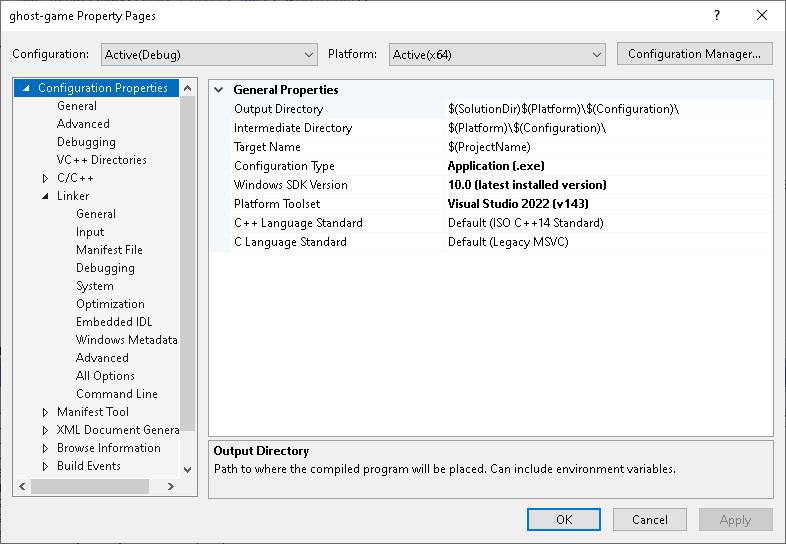

Build the game yourself (Windows)
Software Requirements
- Visual Studio
- Clang/LLVM
- SDL2 Runtime Binaries (64-bit Windows)
- SDL2 Development Libraries (Visual C++ version)
- SDL2_mixer Runtime Binaries (64-bit Windows)
- SDL2_mixer Development Libraries (Visual C++ 64/32-bit)
- SDL2_image Runtime Binaries (64-bit Windows)
- SDL2_image Development Libraries (Visual C++ 32/64-bit)
Websites of the software
Location of the Runtime Binaries
C:\Windows\SDL2.dll
C:\Windows\SDL2_mixer.dll
C:\Windows\libogg-0.dll
C:\Windows\libvorbis-0.dll
C:\Windows\libvorbisfile-3.dll
C:\Windows\SDL2_image.dll
C:\Windows\libpng16-16.dll
C:\Windows\zlib1.dll
Location of the Development Libraries
C:\SDL2 (SDL2)
C:\SDL2_Mixer (SDL2_mixer)
C:\SDL2_Image (SDL2_image)
Setup Visual Studio
Project Properties

Platform Architecture
Platform:
Active (x64)
Project Properties → Configuration Properties → General
Platform Toolset
LLVM (clang-cl)
Project Properties → Configuration Properties → VC++ Directories
Include directories
C:\SDL2\include
C:\SDL2_Mixer\include
C:\SDL2_Image\include
Library Directories
C:\SDL2\lib\x64
C:\SDL2_Mixer\lib\x64
C:\SDL2_Image\lib\x64
Project Properties → Configuration Properties → Linker → General
Additional Libary Directories
C:\SDL2\lib\x64
C:\SDL2_Mixer\lib\x64
C:\SDL2_Image\lib\x64
Project Properties → Configuration Properties → Linker → Input
Additional Dependencies
SDL2.lib
SDL2main.lib
SDL2_Mixer.lib
SDL2_Image.lib